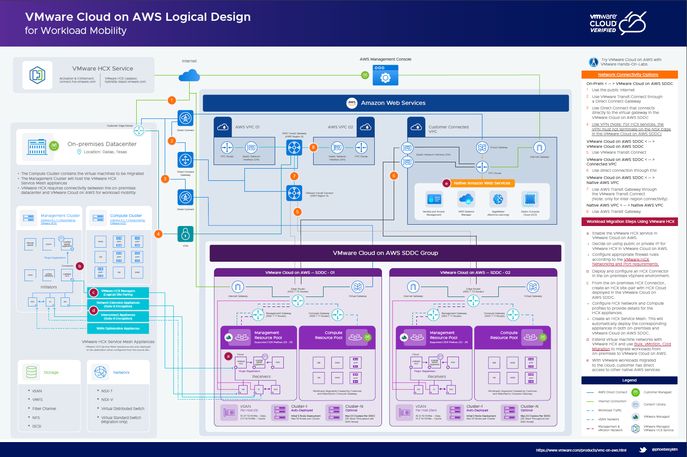

Introducing VMware Cloud on AWS Logical Design Poster for Workload Mobility

~ Este post será traducido al español próximamente ~
Note: This is a copy of my blogpost on the VMware Cloud Community blog.
VMware Cloud on AWS is an integrated hybrid cloud service that enables organizations to migrate or extend their on-premises vSphere environments rapidly. VMware Cloud on AWS includes VMware HCX, a solution that streamlines workload migration across data centers and clouds. There is a variety of connectivity options and migrations methods available with VMware HCX.
Today, we are releasing the VMware Cloud on AWS Logical Design Poster for Workload Mobility to help organizations determine their best path to start migrating workloads to VMware Cloud on AWS.
The poster is composed of five key sections. Each section contains clickable resource links for more details. We also want to highlight VMware Hands-On-Labs, located above the description sections, where you can experience VMware Cloud on AWS.
Download: VMware Cloud on AWS Logical Design for Workload Mobility, full size at 48×32
We hope that this logical design poster will help simplify migrations to VMware Cloud on AWS using VMware HCX.
Key Sections
On-Premises Datacenter
On-premises datacenter hosts virtualized workloads. The workloads may reside on various network and storage types; however, the data center must be running vSphere 6.x and above for VMware HCX.
Amazon Web Services
Organizations must have an AWS VPC that will be connected to the VMware Cloud on AWS service. Organizations may have multiple AWS VPCs, although only one will be directly connected to VMware Cloud on AWS. Other AWS VPCs can be accessed by VMware Cloud on AWS through VMware Transit Connect and AWS Transit Gateway.
VMware Cloud on AWS
VMware Cloud on AWS Software-Defined Data Center (SDDC) leverages VMware Cloud Foundation (VCF) and includes VMware HCX for workload mobility. Organizations may arrange multiple VMware Cloud on AWS SDDCs into an SDDC group. VMware HCX is an add-on service included with VMware Cloud on AWS. When enabled, VMware HCX components are automatically deployed in the VMware Cloud on AWS SDDC. Once networking connectivity is established between the On-Premises Datacenter and VMware Cloud on AWS, organizations can configure HCX and migrate their workloads to VMware Cloud.
Network Connectivity Options
Organizations can choose from various network connectivity options between the On-Premises Datacenter and VMware Cloud on AWS to leverage VMware HCX. This section also provides available options to connect multiple parts of the organization’s multi-cloud infrastructure.
Workload Migration Steps Using VMware HCX
This section provides an ordered list of steps required when migrating workloads to VMware Cloud on AWS using VMware HCX. There are clickable resource links for detailed VMware HCX port requirements and various available migration methods with VMware HCX.